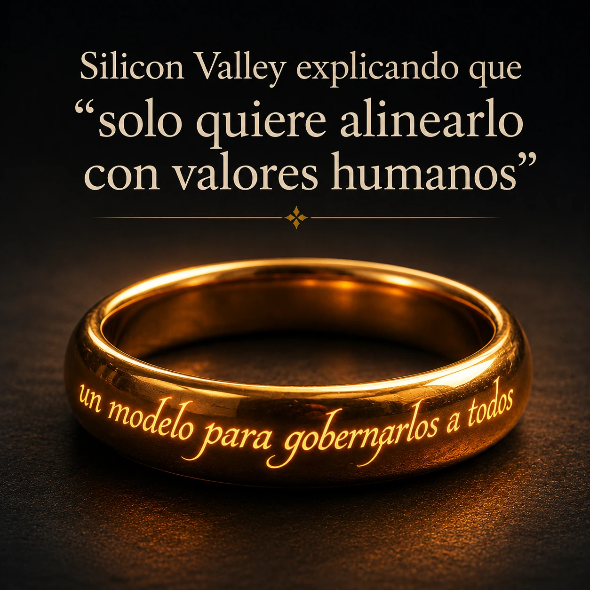

estrategIA #140 ·
Un modelo para gobernarlos a todos
El contexto
El anillo de El señor de los anillos convierte la promesa de alinear la IA con valores humanos en una pregunta sobre concentración de poder. Acompañaba el debate sobre quién define esos valores y quién controla los modelos.
Publicado en: estrategIA #140 — Desarmar la IA: el debate global que ha abierto la encíclica de León XIV
Leer el texto de la imagen
Silicon Valley explicando que “solo quiere alinearlo con valores humanos” Un modelo para gobernarlos a todos